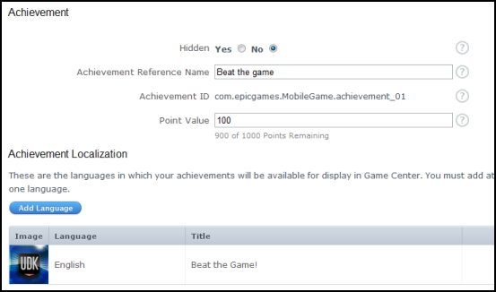
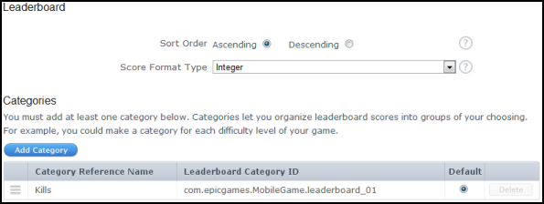

UDN
Search public documentation:
GameCenter
日本語訳
中国翻译
한국어
Interested in the Unreal Engine?
Visit the Unreal Technology site.
Looking for jobs and company info?
Check out the Epic games site.
Questions about support via UDN?
Contact the UDN Staff
中国翻译
한국어
Interested in the Unreal Engine?
Visit the Unreal Technology site.
Looking for jobs and company info?
Check out the Epic games site.
Questions about support via UDN?
Contact the UDN Staff
UE3 Home > Mobile Home > Unreal Engine 3: Mobile Overview > Unreal Engine 3: Apple iOS Overview > Game Center
UE3 Home > Networking & Replication > Game Center
UE3 Home > Networking & Replication > Game Center
Game Center
Overview
Game Center is Apple's online gaming network. It lets gamers use their iOS devices to connect, compare and compete against each other. Games developed for iOS devices using Unreal Engine 3 support the use of Game Center, allowing these games to take on a very social and community-driven experience.
Configuration setup
GC is supported in Unreal Engine 3 on iOS via the OnlineSubsystemGameCenter interface. However, since it brings up the Game Center login/welcome back screen automatically during startup, GC can be enabled and disabled by a configuration file. This is to allow developers to turn this off during development where GC testing is not required, set this to true. Otherwise, set this to false.
[OnlineSubsystemGameCenter.OnlineSubsystemGameCenter] bDisableGameCenter=false
[OnlineSubsystemGameCenter.OnlineSubsystemGameCenter] bDisableGameCenter=false UniqueAchievementPrefix=com.epicgames.exploreue3.achievement_ UniqueCategoryPrefix=com.epicgames.exploreue3.leaderboard_ EpicUniqueAchievementPrefix=com.epicgames.exploreue3.achievement_ EpicUniqueCategoryPrefix=com.epicgames.exploreue3.leaderboard_
Compiling OnlineSubsystemGameCenter
You may need to compile OnlineSubsystemGameCenter before using Game Center for your iOS game. To compile OnlineSubsystemGameCenter, you need to add it to the EditPackages array in DefaultEngine.ini.
[UnrealEd.EditorEngine] +EditPackages=UTGame +EditPackages=UTGameContent +EditPackages=OnlineSubsystemGameCenter
Achievements
 Achievements work pretty similarly to other platforms, except that GC does not display an on-screen message when you unlock an achievement for the first time. When your game code attempts to unlock an achievement, it should first check to make sure it hasn't already been unlocked for the user. Here is the general flow you could use:
- Game starts up (this only need to be done once, but doing it more is okay)
- Call OnlineSub.PlayerInterface.AddReadAchievementsCompleteDelegate() to be notified when reading the achievements data has been completed.
- Call OnlineSub.PlayerInterface.ReadAchievements() to start reading achievements.
- In your delegate, note the achievements that have been read, so you can now query their state.
- Player is playing game, achievement criteria is met.
- Call OnlineSub.PlayerInterface.GetAchievements() to get the state of all achievements.
- Look in the returned array for the achievement whose ID matches.
- Do not use your achievement ID as an index into the achievement array! For one thing, achievement IDs use 1 as their array starting index (Unrealscript and many other languages use 0 for starting array indices).
- If bWasAchievedOnline is false;
- Show your UI, play a sound, etc
- Call OnlineSub.PlayerInterface.UnlockAchievement() to tell GC the player has unlocked the achievement.
Achievement technical details
When the GC code starts up, it will immediately start downloading achievements, so by the time your game code is running, they should already be downloaded. However, to be safe, use the OnlineSub.PlayerInterface.ReadAchievements() call with a delegate to make sure that the achievement download has completed, and that OnlineSub.PlayerInterface.GetAchievements() will return truly valid results. Under the hood, there is much complexity happening for achievements, because if the user is off line when an achievement is unlocked, GC won't ever tell the server. So, we maintain a local achievement state, which is saved to the iOS flash disk. Whenever the user connects to GC at a later time, the engine will check for any differences between the remote achievement state and local achievement state, and merge the two, updating the remote side by unlocking achievements without showing a UI.Achievement example
In this example, an achievement handler actor class is created to allow you to forward achievement calls to it. You can of course, shift this into another class such as your custom GameInfo class. The achievement handler works by storing a pending achievement list (in case several achievements are earned in rapid succession), then calling asynchronous functions which will loop between themselves until all of the pending achievements have been unlocked. To unlock an achievement, YourAchievementHandler::UnlockAchievement() is called with the achievement id as a parameter. This achievement id must match the number at the end of the achievement id. For example, an achievement with the id of com.epicgames.exploreue3.achievement_01 will have the achievement id of 1. Remember that achievement ids usually always start with 1 and not 0. The first check is to ensure that the achievement id is within the pending achievements array. This prevents achievements from being unlocked multiple times. If the achievement handler is not currently processing any achievements, then start processing the pending achievements and set the ProcessingAchievements flag true. This is to start the asynchronous achievement processing loop. From here a delegate which is called when achievements have been read from the server is finished is assign, and the asynchronous call to read the achievements is performed.
class YourAchievementHandler extends Actor;
// Pending achievements
var array<int> PendingAchievements;
// True if we're currently processing achievements
var bool ProcessingAchievements;
/**
* Unlocks an achievement for the player
*
* @param AchievementId Which achievement to unlock
* @param LocalUserNum Local user index
*/
function UnlockAchievement(int AchievementId)
{
local OnlineSubsystem OnlineSubsystem;
local int PlayerControllerId;
// This achievement is already pending, and is in progress so just wait
if (PendingAchievements.Find(AchievementId) != INDEX_NONE)
{
return;
}
// Add the achievement id to the pending list
PendingAchievements.AddItem(AchievementId);
// If we're not processing achievements right now, process one now
if (!ProcessingAchievements)
{
// Connect to GameCenter and link up the achievement delegates
OnlineSubsystem = class'GameEngine'.static.GetOnlineSubsystem();
if (OnlineSubsystem != None && OnlineSubsystem.PlayerInterface != None)
{
// Grab the local player controller id
PlayerControllerId = GetALocalPlayerControllerId();
// Assign the read achievements delegate
OnlineSubsystem.PlayerInterface.AddReadAchievementsCompleteDelegate(PlayerControllerId, InternalOnReadAchievementsComplete);
// Read all achievements
OnlineSubsystem.PlayerInterface.ReadAchievements(PlayerControllerId);
// set true, to prevent this from being fired off again
ProcessingAchievements = true;
}
}
}
/**
* Returns a local player controller id. Same rules apply to Actor::GetALocalPlayerController().
*
* @return Returns a local player controller id
*/
function int GetALocalPlayerControllerId()
{
local PlayerController PlayerController;
local LocalPlayer LocalPlayer;
// Get the local player controller
PlayerController = GetALocalPlayerController();
if (PlayerController == None)
{
return INDEX_NONE;
}
// Get the local player information
LocalPlayer = LocalPlayer(PlayerController.Player);
if (LocalPlayer == None)
{
return INDEX_NONE;
}
return class'UIInteraction'.static.GetPlayerIndex(LocalPlayer.ControllerId);
}
class YourAchievementHandler extends Actor;
// Array of all downloads achievements
var array<AchievementDetails> DownloadedAchievements;
/**
* Called when the async achievements read has completed
*
* @param TitleId The title id that the read was for (0 means current title)
*/
function InternalOnReadAchievementsComplete(int TitleId)
{
local OnlineSubsystem OnlineSubsystem;
local int AchievementIndex, PlayerControllerId;
// Ensure we have an online subsystem, and an associated player interface
OnlineSubsystem = class'GameEngine'.static.GetOnlineSubsystem();
if (OnlineSubsystem == None || OnlineSubsystem.PlayerInterface == None)
{
return;
}
// Grab the local player controller id
PlayerControllerId = GetALocalPlayerControllerId();
// Clear the currently downloaded achievements array as we're copying the fresh data
DownloadedAchievements.Remove(0, DownloadedAchievements.Length);
// Read the achievements into the downloaded achievements array
OnlineSubsystem.PlayerInterface.GetAchievements(PlayerControllerId, DownloadedAchievements, TitleId);
// Grab all of the achievements
if (DownloadedAchievements.Length > 0 && PendingAchievements.Length > 0)
{
// Grab the achievement index
AchievementIndex = DownloadedAchievements.Find('Id', PendingAchievements[0]);
// Unlock the achievement
if (AchievementIndex != INDEX_NONE && !DownloadedAchievements[AchievementIndex].bWasAchievedOnline)
{
// Assign the unlock achievement complete delegate
OnlineSubsystem.PlayerInterface.AddUnlockAchievementCompleteDelegate(PlayerControllerId, InternalOnUnlockAchievementComplete);
// Start the unlocking process
OnlineSubsystem.PlayerInterface.UnlockAchievement(PlayerControllerId, PendingAchievements[0]);
}
}
// Remove the delegate reference so that garbage collection can occur
OnlineSubsystem.PlayerInterface.ClearReadAchievementsCompleteDelegate(PlayerControllerId, InternalOnReadAchievementsComplete);
}
class YourAchievementHandler extends Actor;
/**
* Called when the achievement unlocking has completed
*
* @param bWasSuccessful true if the async action completed without error, false if there was an error
*/
function InternalOnUnlockAchievementComplete(bool bWasSuccessful)
{
local OnlineSubsystem OnlineSubsystem;
local PlayerController PlayerController;
local int AchievementIndex, PlayerControllerId;
// Grab the local player controller id
PlayerControllerId = GetALocalPlayerControllerId();
if (bWasSuccessful && PendingAchievements.Length > 0)
{
// Grab the local player controller
PlayerController = GetALocalPlayerController();
if (PlayerController != None)
{
// Grab the achievement index
AchievementIndex = DownloadedAchievements.Find('Id', PendingAchievements[0]);
// Show the achievement on the user interface players
}
}
// Pop the processed achievement regardless of whether it succeeded or not
PendingAchievements.Remove(0, 1);
// Ensure we have an online subsystem, and an associated player interface
OnlineSubsystem = class'GameEngine'.static.GetOnlineSubsystem();
if (OnlineSubsystem == None || OnlineSubsystem.PlayerInterface == None)
{
return;
}
// If we still have pending achievements left, process the next one
if (PendingAchievements.Length > 0)
{
// Connect to GameCenter and link up the achievement delegates
// Assign the read achievements delegate
OnlineSubsystem.PlayerInterface.AddReadAchievementsCompleteDelegate(PlayerControllerId, InternalOnReadAchievementsComplete);
// Read all achievements
OnlineSubsystem.PlayerInterface.ReadAchievements(PlayerControllerId);
}
else // Otherwise, we're finished so clean up
{
// Clear the delegate bind
OnlineSubsystem.PlayerInterface.ClearUnlockAchievementCompleteDelegate(PlayerControllerId, InternalOnUnlockAchievementComplete);
// Set the flag to state that we're no longer processing achievements
ProcessingAchievements = false;
}
}
class YourAchievementHandler extends Actor;
/**
* Called when the actor is destroyed
*/
event Destroyed()
{
local OnlineSubsystem OnlineSubsystem;
local int PlayerControllerId;
Super.Destroyed();
// Ensure we have an online subsystem, and an associated player interface
OnlineSubsystem = class'GameEngine'.static.GetOnlineSubsystem();
if (OnlineSubsystem == None || OnlineSubsystem.PlayerInterface == None)
{
return;
}
// If we're still processing achievements, delegates assigned must be clear so that garbage collection can occur
if (ProcessingAchievements)
{
// Grab the local player controller id
PlayerControllerId = GetALocalPlayerControllerId();
// Remove the delegate reference so that garbage collection can occur
OnlineSubsystem.PlayerInterface.ClearReadAchievementsCompleteDelegate(PlayerControllerId, InternalOnReadAchievementsComplete);
// Clear the delegate bind
OnlineSubsystem.PlayerInterface.ClearUnlockAchievementCompleteDelegate(PlayerControllerId, InternalOnUnlockAchievementComplete);
}
}
Leader boards
 The other major non-multiplayer feature of GC is leader boards. Again, they tend to work in a similar fashion to other platforms, but there are some limitations to GC leader boards. GC actually only supports one "leader board" with multiple "categories". We treat the categories as columns in a table for the one leader board. However, all categories are displayed, with their UI, with the same format and label, so all categories could be time, or integer points, or integer kills, etc. Additionally they are all either ascending or descending. This will affect how you set up your scores. To report scores, you create a subclass of OnlineStatsWrite and set up its properties (with 1 based IDs) in the defaultproperties block. From there, you create an instance of the object, set the values, and then report with OnlineSub.StatsInterface.WriteOnlineStats().
class YourOnlineStatsWrite extends OnlineStatsWrite;
const PROPERTY_KILLS = 1;
const PROPERTY_LEVEL = 2;
const PROPERTY_GOLD = 3;
defaultproperties
{
Properties=((PropertyId=PROPERTY_KILLS,Data=(Type=SDT_Int32,Value1=0)),(PropertyId=PROPERTY_LEVEL,Data=(Type=SDT_Int32,Value1=0)),(PropertyId=PROPERTY_GOLD,Data=(Type=SDT_Int32,Value1=0)))
}
- Read a saved value of the player's kills (you could use a configuration value or BasicSaveObject/BasicLoadObject)
- Increment the value accordingly
- Write the scores to Game Center
local OnlineSubsystem OnlineSubsystem;
local OnlineSuppliedUIInterface OnlineSuppliedUIInterface;
local array<UniqueNetId> PlayerIds;
local UniqueNetId PlayerId;
local YourOnlineStatsRead YourOnlineStatsRead;
local PlayerController PlayerController;
local LocalPlayer LocalPlayer;
local byte LocalUserNum;
// Get the online sub system
OnlineSubSystem = class'GameEngine'.static.GetOnlineSubsystem();
// Check that the online subsystem is accessible
if (OnlineSubSystem != None)
{
// Create the PlayerIds array from the local player controller
PlayerController = GetALocalPlayerController();
if (PlayerController != None)
{
// Get the local player
LocalPlayer = LocalPlayer(PlayerController.Player);
if (LocalPlayer != None)
{
// Get the local user num
LocalUserNum = class'UIInteraction'.static.GetPlayerIndex(LocalPlayer.ControllerId);
// Get the unique player id from the local user num
OnlineSubSystem.PlayerInterface.GetUniquePlayerId(LocalUserNum, PlayerId);
// Add the unique player id to the player ids array
PlayerIds.AddItem(PlayerId);
// Get the online supplied UI interface
OnlineSuppliedUIInterface = OnlineSuppliedUIInterface(OnlineSubSystem.GetNamedInterface('SuppliedUI'));
if (OnlineSuppliedUIInterface != None)
{
// Instance the online stats read class
YourOnlineStatsRead = new () class'YourOnlineStatsRead';
if (YourOnlineStatsRead!= None)
{
// Show the online stats UI
OnlineSuppliedUIInterface.ShowOnlineStatsUI(PlayerIds, YourOnlineStatsRead);
}
}
}
}
}
class YourOnlineStatsRead extends OnlineStatsRead;
const PROPERTY_KILLS = 1;
const PROPERTY_LEVEL = 2;
const PROPERTY_GOLD = 3;
defaultproperties
{
ColumnIds=(PROPERTY_KILLS,PROPERTY_LEVEL,PROPERTY_GOLD)
}
Leaderboard technical details
Similar to the achievements, if a score is reported while the user is offline, GC won't automatically resubmit it. So, we do a lot under the hood to save the highest and lowest score reported to disk, and then we report them to the server next time the user signs in. We don't know if the leader board is ascending or descending, which is why it submits highest and lowest. When reading stats, all the scores are reported as QWORDs / Int64s (64 bit integers, which have a range of − 9,223,372,036,854,775,808 to 9,223,372,036,854,775,807), which is how GC stores leader board values.Multiplayer
Multiplayer is supported, currently only as lobby-based-matchmaking with up to four players. Due to GC handling the network traffic via a GKMatch object, only players discovered via GC matchmaking can be communicated with for game networking. One of the four iOS devices will act as the server.
Matchmaking
Matchmaking is performed using GC's built-in interface:
OnlineSuppliedUIInterface(OnlineSub.GetNamedInterface('SuppliedUI')).ShowMatchmakingUI();
Invitations
GC supports inviting players from its matchmaking UI. If the invited player is playing a different game, they will see an invitation message, and if they accept the invitation, it will launch your game, and when the game boots up, the GC matchmaking UI will slide up to show the player they are joining the match. If the player is already in your game, the code in PlayerController (see OnGameInviteAccepted()) will tear down any current online game, and then bring up the GC matchmaking UI to show the player they are joining the match. Note that the invited player may actually become the server.Voice chat
GC has a very basic, easy-to-use Voice Chat system. After you have entered a multi player game, you could call OnlineSub.VoiceInterface.StartNetworkedVoice() to have the players talk to each other. Muting and querying for who is talking works as well, using the standard functions MuteRemoteTalker(), IsRemotePlayerTalking(), etc.Garbage Collection
Whenever you bind to any of the Online Subsystem delegates, it is important to ensure that they are always cleared whenever the level is scheduled for garbage collection. This is important, as otherwise, garbage collection will fail causing chunks of memory to never be released! The Kismet Online Subsystem development kit gem describes this in further detail.
Related Topics
- Kismet Online Subsystem - This development kit gem demonstrates how to add Kismet nodes which interface with Game Center.
Downloads
- YourAchievementHandler.uc - Download the source code for the Achievement example.